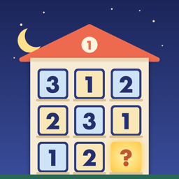

すうじのへや
たて・よこ・へやに数字を入れる数字パズル（iPhone）
遊び方
たての列・よこの列・へや（太い線のかこみ）に、1から順の数字を1つずつ入れます。マスをえらんで、下の数字をおすと入ります。ぜんぶうめたら「確定する」で答え合わせをします。
- ステージ：全200ステージ・20の階。4×4 から始まり、6×6、9×9 へ。いびつなへや・ななめ・合計の小部屋・となりはつづかない など、ちょっと変わったルールの階もあります
- ★：確定ミスなし・ヒントなしでクリアすると★3、確定ミス2回までで★2です
- 今日のパズル：毎日かわる 9×9 の1問です（だれでも同じ問題）。その日はじめてクリアしたときの記録で、ランキングに参加できます
- ヒント：次に決まるマスを1つ、理由といっしょに教えます。1日3回まで無料で、そのあとは動画広告を見ると1回使えます（見るかどうかは選べます）
よくある質問
確定ミスとは？
ぜんぶうめて「確定する」を押したときに、まちがいがあった回数です。うまっていないときの「確定」は数えません。まちがいがあるときは、数字がかぶっているマスが赤くなります。
メモを使いたい
「メモ」をオンにすると、数字ボタンで候補を小さく書きこめます。数字を入れると、同じ列・行・へやのメモからその数字が自動で消えます（せっていで切れます）。
途中でやめたい
左上の一時停止ボタンでいつでも止められます。とちゅうでアプリを閉じても、次に開くと続きから遊べます。
次のステージが選べない
ステージはクリアすると次が開きます。
記録を消したい・引き継ぎたい
記録はこの iPhone の中に保存しています（ランキングに名前をのせた場合は、ニックネームと記録だけを送ります。ランキングの画面の「ランキングから自分の記録を消す」でいつでも消せます）。アプリを削除すると記録も消えます。ほかの端末への引き継ぎにはまだ対応していません。
お問い合わせ
不具合やご要望は、メールでお知らせください。お使いの iPhone の機種と iOS のバージョンを書いていただけると助かります。